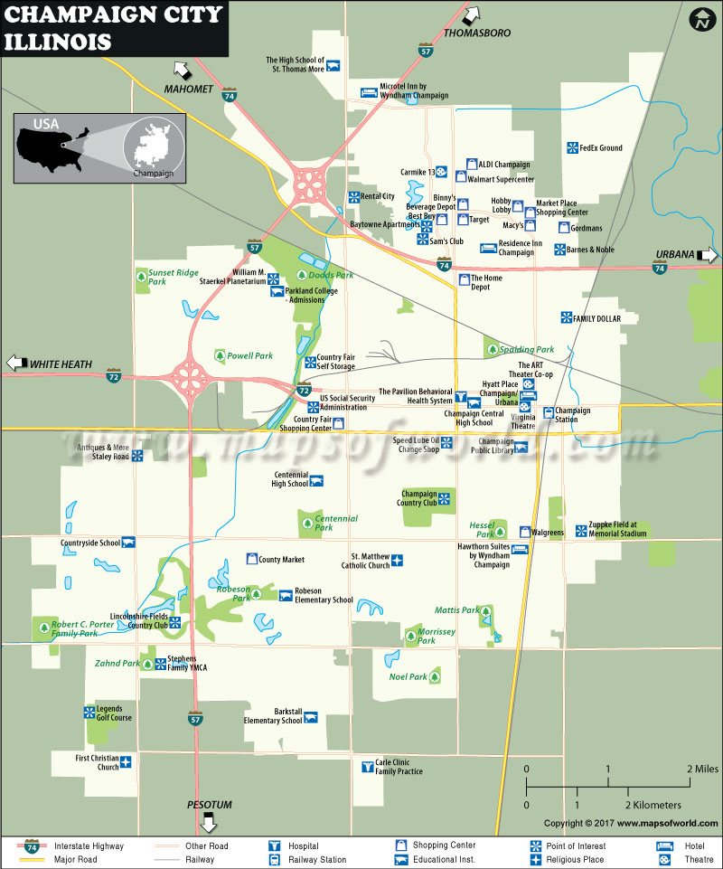

{% extends 'datamanager/base.html' %}
{% block title %}Iteractive Community Envrionment Mapping{% endblock %}
{% block login %}
{% if user.is_authenticated %}
Hi {{ user.username }}!
{% else %}
{% endif %}
{% endblock %}
{% block content %}
Interactive Map

{% endblock content %}